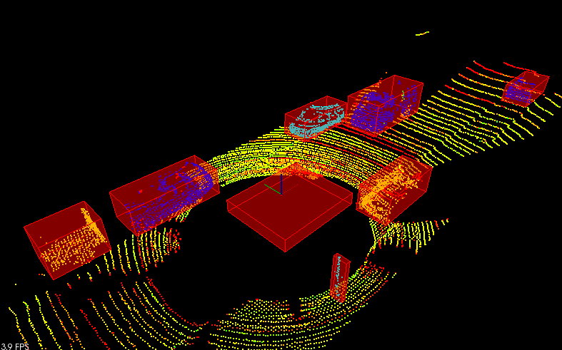
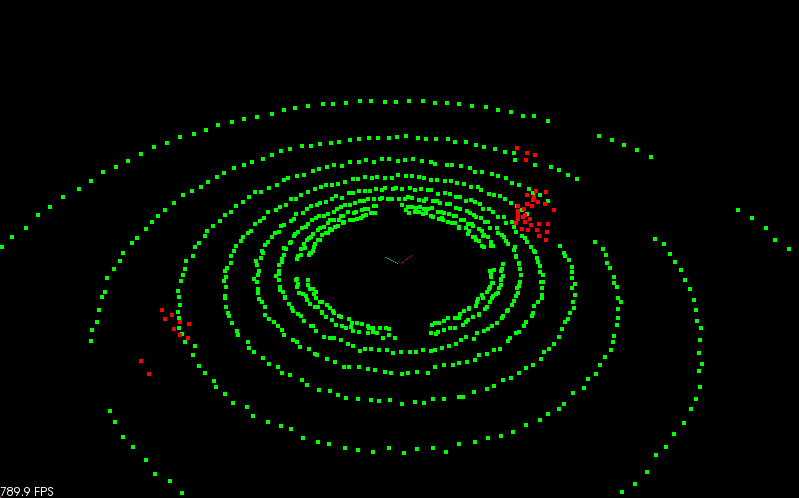
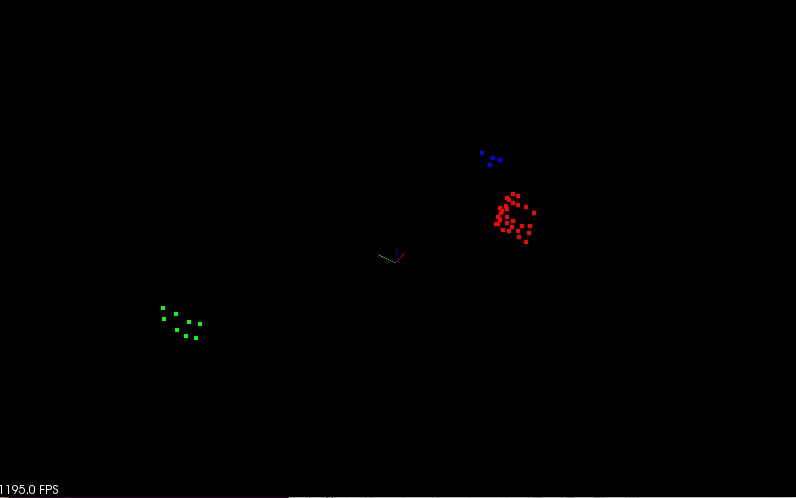

Obstacle detection using lidar data
Processing point clouds, and use it to detect car and trucks on a narrow street using lidar.
Detection pipeline : filtering -> segmentation -> clustering -> bounding boxes.
Segmentation and clustering methods are created from scratch.
Lidar Point Cloud
This is the sample lidar city point cloud which is used in the project to test the obstacle detection pipeline.

Filtering
Filtering is the first step in removing points not in region of interest (ROI). In addition to that points cloud is downsampled to appropiate Voxel Grid in order to improve the computation efficiency as shown in below image.

Segmentation
Point clouds is separated into obstable cloud and plane cloud using RANSAC algorithm implemented from scratch.
Below is the simulated scenario shown with lidar rays rendered

Following is the segmentation output, as seen in the image point clouds is segmented into two parts as plane cloud and obstacle cloud. All the points that belong to plane cloud (Road surface) is shown in green and the obstacle cloud is rendered in red color.

Clustering
Euclidean Clustering method implemented using KD tree is used to cluster the obstable cloud obtained from Segmentation. Which is later used to track objects.
Below is the image of KD-Tree implementation that was able to cluster 2D points

KD-Tree implmentation is then extended to support 3D PCL point clouds.
Then based on the principles of Euclidean clustering clusters are extracted from obstacle points cloud using KD-Tree implemented earlier.
Results seen after applied clustering on the above shown sample simulated data is shown below where three clusters are extracted from obstacle points cloud and each cluster is marked with different color.

Bounding Box
Below figure shows the bounding box drawn using pcl library around the clusters indentified in clustering step.

To account for the vehicles direction in advanced driving scenarios, minimum oriented bounding box of the cluster point cloud is drawn using the Principle Component analysis by projecting obstacles on xy plane.

In addition to that a bounding box is also drawn to show the roof of the vehicle as shown below

Putting it all together
Finally plumbing everything in the pipeline we have the following image which detects obstacles (vehicles, pole, pedestrians) in the ROI.
There are two things involved here which needs to be considered.
- Detecting vehicles (objects with bigger ROI)
For detecting vehicles we need to tune the tweak the clustering parameters such that points less than certain threshold are discarded, we need to also increase the distance threshold so that points with larger distance (front and back of vehicle) is not discarded.
- Detecting pedestrians, poles etcc., (objects with smaller ROI)
For detecting objects with smaller ROI we need to crop all clusters that has more number of points more than certain threshold also we can notice that points of such objects are closer.

Installation
Credits
Based on Udacity’s SFND_Lidar_Obstacle_Detection